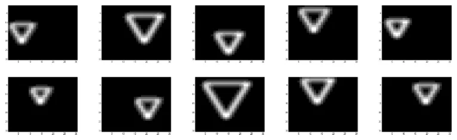
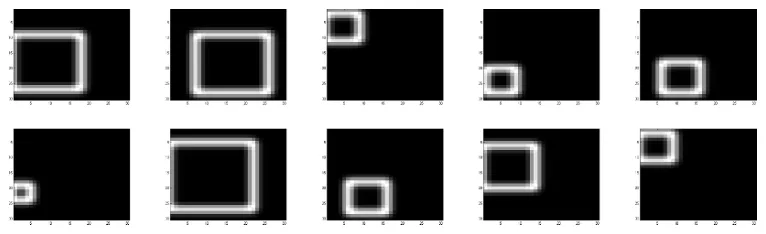
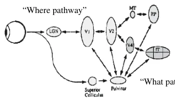

Phần II · Bài 8 — Nhận dạng hình dạng thông qua biểu diễn vận động động lực học (Misra & Choe)

Hình 5 Biểu diễn thị giác của các hình tam giác. Chuỗi hình này minh họa phạm vi các biến thiên được thực hiện trên hình dạng tam giác trong biểu diễn trí nhớ thị giác (mảng 2D) được thực hiện để khớp với kích thước đầu vào (30 × 30 = 900). Một thuật toán rất đơn giản đã được thiết kế để thay đổi kích thước hoặc kéo giãn chuỗi hành động. Kết quả cuối cùng là mỗi chuỗi hành động có kích thước 900 chiều.
3.2 Nhận dạng đối tượng và Ánh xạ biểu diễn
Các thí nghiệm được xây dựng bằng cách tạo ra một nghìn hình được co giãn tỷ lệ ngẫu nhiên và tịnh tiến ngẫu nhiên cho mỗi loại hình dạng (hình tam giác, hình tròn và hình vuông) cùng với các biểu diễn chuỗi hành động và mảng 2D tương ứng của chúng. Các mẫu được tạo cho biểu diễn chuỗi hành động và mảng 2D được lưu trữ trong tập dữ liệu tương ứng của chúng. Một phần của tập dữ liệu này (75%) được sử dụng để huấn luyện một mạng thần kinh và phần còn lại được sử dụng để kiểm tra (25%). Sử dụng tập dữ liệu kiểm tra, hiệu suất của từng biểu diễn đã được ghi lại. Một giải thích chi tiết được trình bày trong các phần sau.
Có tổng cộng mười lần chạy cho mỗi thí nghiệm. Đối với mỗi lần thử này, tập huấn luyện và tập kiểm tra được chọn ngẫu nhiên từ tập dữ liệu cho mỗi lớp (hình tròn, hình vuông và hình tam giác). Tập này bao gồm một nghìn điểm cho chuỗi hành động và mảng 2D cho mỗi hình trong ba hình, tạo ra tập dữ liệu chuỗi hành động và mảng 2D gồm ba nghìn điểm mỗi loại. Đối với mỗi lần chạy, 75% của

Hình 6 Biểu diễn thị giác của các hình vuông. Chuỗi hình này minh họa phạm vi các biến thiên được thực hiện trên hình dạng vuông trong biểu diễn trí nhớ thị giác (mảng 2D)
90
90
80
80
70
70
60
60
50
50
40
40
30
30
20
20
10
10
0
0
0 10 20 30 40 50 60 70 80 90 −10
0 10 20 30 40 50 60 70 80 90 −10 (a) Không làm mượt (b) Đã áp dụng làm mượt
25
25
20
20
15
15
10
10
5
5
5 10 15 20 25 30 0
5 10 15 20 25 30 0 (c) Không làm mượt (d) Đã áp dụng làm mượt
Hình 7 Chuỗi hành động cho một hình dạng tròn. (a) Đồ thị này minh họa một thứ tự tuyến tính của chuỗi hành động cho một hình dạng tròn trước khi áp dụng bất kỳ bước làm mượt nào. Lưu ý trong hình này sự thay đổi rời rạc của các vector hành động. (b) Đồ thị này minh họa một thứ tự tuyến tính của chuỗi hành động cho một hình dạng tròn sau khi áp dụng làm mượt. Ở đây các vector hành động đã được làm mượt để hiển thị sự biến thiên liên tục trong các hành động. (c) Đồ thị này minh họa góc nhìn 2 chiều của chuỗi hành động cho một hình dạng tròn trước khi áp dụng bất kỳ bước làm mượt nào. Lưu ý trong hình này sự thay đổi rời rạc của các vector hành động theo dạng bậc thang. (d) Đồ thị này minh họa góc nhìn 2 chiều của chuỗi hành động cho một hình dạng tròn sau khi áp dụng làm mượt. Các vector hành động đã làm mượt cho thấy một chuỗi hành động trực quan hơn tập dữ liệu được chọn ngẫu nhiên làm dữ liệu huấn luyện và phần còn lại được dùng làm dữ liệu kiểm tra. Tập huấn luyện được cung cấp cho mạng thần kinh, và được huấn luyện bằng thuật toán lan truyền ngược (backpropagation) [55, 56, 57]. Mạng thần kinh có 900 tế bào thần kinh đầu vào, 10 tế bào thần kinh ẩn trong lớp ẩn duy nhất và 3 tế bào thần kinh đầu ra tương ứng với 3 lớp hình dạng. Đối với thí nghiệm ánh xạ biểu diễn, các vector mục tiêu được sửa đổi để trở thành các biểu diễn trí nhớ thị giác và trí nhớ kỹ năng thực tế. Trong trường hợp này số lượng tế bào thần kinh đầu ra được tăng lên 900.
Tỷ lệ phân loại trung bình trên tập kiểm tra là thước đo được sử dụng để đánh giá hiệu suất tương đối cho cả trí nhớ thị giác và trí nhớ kỹ năng. Tỷ lệ phân loại cho mỗi lần thử ghi lại số lần trung bình mà đầu ra thực tế lệch khỏi vector mục tiêu của ba tế bào thần kinh đầu ra. Một ngưỡng 0,5 được đặt sao cho nếu độ lệch của mức kích hoạt tế bào thần kinh đầu ra nằm trong giá trị này thì
60
60
50
50
40
40
30
30
20
20
10
10
0 10 20 30 40 50 60 0
0 10 20 30 40 50 60 0 (a) Không làm mượt (b) Đã áp dụng làm mượt
25
26
24
22
20
20
18
15
16
14
5 10 15 20 10
5 10 15 20 12 (c) Không làm mượt (d) Đã áp dụng làm mượt
Hình 8 Chuỗi hành động cho một hình dạng tam giác. Các đồ thị này minh họa hiệu ứng làm mượt tương tự như đã đề cập trong Hình 7, ngoại trừ việc chúng hiển thị trường hợp của một hình tam giác đầu vào được coi là phân loại đúng. Tỷ lệ phân loại trung bình sau đó được thu thập bằng cách chạy thí nghiệm mười lần và lấy giá trị trung bình cùng độ lệch chuẩn của các giá trị. Kiểm định t của Student (Student’s t-test) được sử dụng để đo lường ý nghĩa thống kê của các sự khác biệt [58].
Một thước đo khác là sai số bình phương trung bình (MSE). Giá trị này đại diện cho trung bình của tất cả các độ lệch bình phương của các giá trị đầu ra so với các giá trị mục tiêu chính xác. MSE mang lại một ý niệm chung về việc ánh xạ được học tốt đến mức nào trong trường hợp không thể phân loại cứng.
4 Các thí nghiệm tính toán và Kết quả
Để đánh giá hiệu quả của từng biểu diễn trí nhớ, cần có một sự đánh giá toàn diện từng hệ thống trí nhớ đối với các thước đo hiệu suất được chỉ định trong phần trước. Các thước đo hiệu suất này được sử dụng chủ yếu để chứng minh sự khác biệt tương đối giữa hai
45
45
40
40
35
35
30
30
25
25
20
20
15
15
10
10
5
5
–5 0 5 10 15 20 25 30 35 40 45 0
–5 0 5 10 15 20 25 30 35 40 45 0 (b) Đã áp dụng làm mượt (a) Không làm mượt
30
30
28
28
26
26
24
24
22
22
20
20
18
18
0 2 4 6 8 10 12 14 16
0 2 4 6 8 10 12 14 16 (c) Không làm mượt (d) Đã áp dụng làm mượt
Hình 9 Chuỗi hành động cho một hình dạng vuông. Các đồ thị này minh họa hiệu ứng làm mượt tương tự như đã đề cập trong Hình 7, ngoại trừ việc chúng hiển thị trường hợp của một hình vuông hệ thống trí nhớ hơn là cung cấp một cơ chế so sánh tuyệt đối với một phương pháp nhận dạng mẫu tổng quát có thể tìm cách tối đa hóa hiệu suất.
4.1 Trí nhớ thị giác so với Trí nhớ kỹ năng trong các nhiệm vụ nhận dạng
Tốc độ học tổng thể, được đo bằng MSE, được minh họa trong Hình 10. Các giá trị MSE cho mỗi đường cong được tính bằng cách lấy trung bình của mười lần thử cho mỗi biểu diễn trong hai biểu diễn trí nhớ. Mạng thần kinh được cho phép huấn luyện trong một nghìn kỷ nguyên (epoch). Như có thể thấy từ Hình 10, tỷ lệ lỗi của trí nhớ kỹ năng luôn thấp hơn so với trí nhớ thị giác. Ngoài ra sau khoảng 200 kỷ nguyên, MSE tiến gần đến 0 đối với trí nhớ kỹ năng trong khi trí nhớ thị giác chỉ có thể đạt đến giá trị MSE khoảng 0,1 sau toàn bộ chu kỳ một nghìn kỷ nguyên. Kết quả chứng minh rõ ràng rằng mạng thần kinh có thể học dễ dàng hơn các chuỗi hành động khác nhau trong trí nhớ kỹ năng.
Sự khác biệt giữa trí nhớ kỹ năng và trí nhớ thị giác được nhấn mạnh thêm trong Hình 11. Ở đây tỷ lệ phân loại trung bình trên các tập kiểm tra được hiển thị bằng
Đường cong học tập
101
Trí nhớ kỹ năng Trí nhớ thị giác
100 log(MSE)
10–1
10–2
0 100 200 300 400 500 600 700 800 900 1000 10−3
Kỷ nguyên (Epoch)
Hình 10 Đường cong học tập cho trí nhớ thị giác và trí nhớ kỹ năng. Đồ thị này hiển thị đường cong học tập trung bình cho cả trí nhớ kỹ năng và trí nhớ thị giác (10 lần thử mỗi loại). Từ đồ thị này chúng ta có thể thấy rằng trí nhớ kỹ năng được học nhanh hơn và chính xác hơn. Mặt khác trí nhớ thị giác vẫn có MSE cao hơn ngay cả sau 1.000 kỷ nguyên biểu đồ cột với các thanh sai số biểu thị khoảng tin cậy 95%. Tỷ lệ phân loại trung bình cho trí nhớ thị giác là 0,28 trong khi đối với trí nhớ kỹ năng nó cao hơn gần gấp bốn lần, gần 0,97. Sự khác biệt có ý nghĩa thống kê theo kiểm định t (p = 0, n = 10). Tóm lại, trí nhớ kỹ năng dựa trên hành động dễ học hơn đáng kể so với trí nhớ thị giác dựa trên bitmap, cả về tốc độ lẫn độ chính xác.
4.2 Trí nhớ kỹ năng với các biến thiên
Hiệu suất của trí nhớ kỹ năng được đo lường dưới các biến thiên trong quá trình hình thành chuỗi hành động. Những biến thiên này bao gồm (1) thay đổi kích thước cửa sổ làm mượt, (2) biến thiên số lượng điểm xuất phát trong quá trình đi qua đối tượng cho một chuỗi hành động cụ thể, và (3) nhiễu trong chuỗi hành động.
4.2.1 Kích thước cửa sổ làm mượt
Việc làm mượt đã được áp dụng cho tất cả chuỗi hành động được tạo ra. Hiệu ứng của việc này đã được minh họa trong phần trước. Tỷ lệ phân loại trung bình tăng nhẹ khi tăng kích thước cửa sổ. Tuy nhiên, việc tăng thêm kích thước cửa sổ khiến tỷ lệ phân loại trung bình giảm nhẹ. Kết quả là kích thước cửa sổ làm mượt mặc định được chọn là ba. Hình 12 cho thấy việc làm mượt ảnh hưởng như thế nào đến tỷ lệ phân loại trung bình cho trí nhớ kỹ năng. Các giá trị này là trung bình thu được bằng cách thực hiện mười lần thử. Sự khác biệt giữa kích thước cửa sổ
1
0.9
Tỷ lệ phân loại trung bình (+ / – 95% Cl)
0.8
0.7
0.6
0.5
0.4
0.3
0.2
0.1
Trí nhớ thị giác Trí nhớ kỹ năng 0
Hình 11 Tỷ lệ phân loại trung bình của trí nhớ thị giác và trí nhớ kỹ năng. Biểu đồ cột này hiển thị tỷ lệ phân loại trung bình của trí nhớ kỹ năng và trí nhớ thị giác trên tập kiểm tra (± khoảng tin cậy 95%). Trí nhớ kỹ năng có phương sai nhỏ hơn và tỷ lệ phân loại trung bình cao hơn, thể hiện hiệu suất tốt ổn định hơn so với trí nhớ thị giác 3 và kích thước 0 có ý nghĩa thống kê (kiểm định t, p < 0,0002, n = 10), nhưng sự khác biệt giữa kích thước cửa sổ 6 và 3 thì không (kiểm định t, p > 0,35, n = 10).
4.2.2 Điểm xuất phát ngẫu nhiên
Một biến thiên khác là kiểm tra xem tỷ lệ phân loại bị tác động như thế nào bởi các điểm xuất phát khác nhau trên đối tượng đầu vào được chọn để tạo chuỗi hành động. Điều này được thực hiện bằng cách thay đổi số lượng vị trí xuất phát cho mỗi chuỗi hành động. Việc có các điểm xuất phát khác nhau là một biến thiên quan trọng bởi vì theo cách thiết lập ban đầu của hệ thống biểu diễn trí nhớ, tất cả các chuỗi hành động được tạo ra bằng cách cho quỹ đạo bắt đầu tại cùng một vị trí tương đối trên hình dạng và hệ quả là chuỗi hành động được tạo ra sẽ không có nhiều biến thiên. Hình 13 hiển thị góc nhìn 2D của chuỗi hành động cho một hình vuông và các vị trí khả dĩ nơi chuỗi hành động có thể bắt đầu. Hình 14 hiển thị góc nhìn 1D tương ứng.
Tác động tổng thể của việc thêm các điểm xuất phát khác nhau là tỷ lệ phân loại trung bình giảm xuống khi số lượng điểm xuất phát thay thế tăng lên (hiển thị trong Hình 15). Tuy nhiên, ngay cả với sự biến thiên cao trong các điểm xuất phát khả dĩ, tỷ lệ phân loại trung bình cho trí nhớ kỹ năng vẫn cao hơn trí nhớ thị giác. Các giá trị này là trung bình thu được bằng cách thực hiện mười lần thử với dữ liệu huấn luyện và kiểm tra thay đổi và kích thước cửa sổ làm mượt không đổi là ba. Sự khác biệt
1.4
1.2
Tỷ lệ phân loại trung bình (+ / – 95% Cl)
1
0.8
0.6
0.4
0.2
Kích thước cửa sổ = 0 Kích thước cửa sổ = 3 Kích thước cửa sổ = 6 0
Hình 12 Tác động của việc làm mượt lên tỷ lệ phân loại đối với trí nhớ kỹ năng. Biểu đồ cột này hiển thị tác động của việc thay đổi kích thước cửa sổ lên tỷ lệ phân loại trung bình (± khoảng tin cậy 95%). Kích thước cửa sổ 3 mang lại hiệu suất tối ưu nhất với độ biến thiên thấp nhất
14
12 điểm xuất phát mới
10
8
6 điểm xuất phát trước đó
4
0 2 4 6 8 10 12 2
Hình 13 Góc nhìn 2D của chuỗi hành động cho một hình vuông có làm mượt. Hai mũi tên chỉ vào hai vị trí khác nhau nơi các chuỗi hành động có thể đã bắt đầu
40
40
35
35
30
30
25
25
20
20
15
15
10
10
5
5
−5 0 5 10 15 20 25 30 35 40 0
0 5 10 15 20 25 30 35 40 0 (a) Điểm xuất phát ban đầu (b) Điểm xuất phát thay thế
Hình 14 Thứ tự tuyến tính của chuỗi hành động cho một hình vuông với các điểm xuất phát khác nhau. Đồ thị trong (a) cho thấy chuỗi hành động sẽ xuất hiện như thế nào nếu việc tạo chuỗi hành động bắt đầu từ điểm xuất phát ban đầu. Đồ thị trong (b) cho thấy chuỗi hành động sẽ xuất hiện như thế nào nếu việc tạo chuỗi hành động bắt đầu từ điểm xuất phát mới (hiển thị trong Hình 13). Mũi tên nét đứt trong (b) chỉ vào vị trí xuất phát ban đầu. Sự khác biệt duy nhất so với phiên bản gốc là chuỗi hành động bị dịch chuyển, nhưng điều đó đủ để ảnh hưởng đến độ chính xác phân loại giữa trí nhớ thị giác so với tất cả các lần thử trí nhớ kỹ năng đều có ý nghĩa thống kê theo kiểm định t (p < 0,00015, n = 10). Tóm lại, trí nhớ kỹ năng dễ học hơn đáng kể so với trí nhớ thị giác, ngay cả khi nhiệm vụ được làm cho khó hơn đối với trí nhớ kỹ năng. Lưu ý rằng hiệu suất sẽ giảm sút mạnh nếu việc tạo chuỗi hành động có thể bắt đầu từ một điểm tùy ý trên hình dạng. Tuy nhiên, con người thường bắt đầu quỹ đạo của mình từ một vị trí rập khuôn, do đó điểm xuất phát có thể không quá tùy ý trong thực tế. Ở đây, mục đích chủ yếu là cho thấy trí nhớ dựa trên kỹ năng hoạt động như thế nào trong các điều kiện điển hình.
4.2.3 Nhiễu vận động
Ở người, việc theo vết đường viền của một hình dạng thường dẫn đến những biến thiên nhỏ trong quỹ đạo được theo vết. Biến thiên cuối cùng chúng tôi thử nghiệm là việc đưa nhiễu vào chuỗi hành động. Điều này có nghĩa là một sai số ngẫu nhiên tại một thời điểm nào đó trong quá trình tạo chuỗi hành động đã xảy ra khiến quỹ đạo lệch khỏi hướng đi bình thường của nó. Các chuỗi hành động được tạo như trước, tuy nhiên, một góc ngẫu nhiên từ 0 đến 360 độ được cộng thêm vào dựa trên độ lớn của hệ số nhiễu. Một ví dụ về nhiễu trong chuỗi hành động được hiển thị trong Hình 16. Trong hình này, hệ số nhiễu 0,1 đã được sử dụng.
Hệ số nhiễu là xác suất ảnh hưởng đến độ lớn mà góc của một vector hành động trong không gian có thể bị tác động. Do đó, hệ số nhiễu lớn hơn sẽ có nghĩa là sự biến dạng lớn hơn của hình dạng mà một chuỗi hành động cụ thể có thể theo vết. Hình 17 cho thấy tỷ lệ phân loại giảm xuống như thế nào khi nhiễu tăng lên. Tuy nhiên, ngay cả ở mức nhiễu cao hơn, trí nhớ kỹ năng vẫn có thể vượt trội hơn trí nhớ thị giác. Sự khác biệt giữa trí nhớ thị giác so với tất cả các lần thử trí nhớ kỹ năng đều có ý nghĩa thống kê theo kiểm định t (p < 0,002, n = 10). Điều này chứng minh rằng trí nhớ dựa trên kỹ năng
1.4
1.2
Tỷ lệ phân loại trung bình (+ / – 95% Cl)
1
0.8
0.6
0.4
0.2
1 điểm 2 điểm 4 điểm 6 điểm Trí nhớ thị giác 0
Hình 15 Tác động của việc tăng số lượng điểm xuất phát thay thế trong trí nhớ kỹ năng lên tỷ lệ phân loại. Biểu đồ cột này hiển thị sự thay đổi tỷ lệ phân loại trung bình khi số lượng điểm xuất phát quỹ đạo tăng lên (± khoảng tin cậy 95%). Khi số lượng điểm xuất phát ngẫu nhiên tăng lên, tỷ lệ phân loại trung bình giảm đều, nhưng trong mọi trường hợp trí nhớ kỹ năng đều hoạt động tốt hơn trí nhớ thị giác bền vững trước nhiễu trong chuỗi vận động. Lý do cho sự bền vững này là do thực tế là bất chấp nhiễu, các thành phần của trí nhớ kỹ năng (các vector hành động) không thay đổi về số lượng hay vị trí. Chỉ có hướng của chúng thay đổi. Ngược lại, trong trí nhớ thị giác, nhiễu có thể làm tăng hoặc giảm số lượng và thay đổi vị trí của các điểm ảnh đang hoạt động.
90
25
80
70
20
60
50
15
40
30
10
20
10
5
0
0 10 20 30 40 50 60 70 80 90 –10
0 5 10 15 20 25 0 (a) Chuỗi hành động (b) Chuỗi hành động được vẽ trong không gian 2D
Hình 16 Chuỗi hành động có nhiễu cho một hình dạng tròn. Đồ thị hiển thị góc nhìn 1D và 2D của chuỗi hành động cho một hình tròn sau khi áp dụng nhiễu ngẫu nhiên (hệ số nhiễu 0,1) và sau khi làm mượt
1
0.9
Tỷ lệ phân loại trung bình (+/– 95% Cl)
0.8
0.7
0.6
0.5
0.4
0.3
0.2
0.1
0.1 0.2 0.3 0.4 0.5 Thị giác 0
Hệ số nhiễu
Hình 17 Tác động của nhiễu vận động lên tỷ lệ phân loại. Biểu đồ cột này hiển thị tác động của việc tăng nhiễu lên tỷ lệ phân loại trung bình của trí nhớ kỹ năng (± khoảng tin cậy 95%). Trí nhớ thị giác được hiển thị ở đây làm đường cơ sở. Có thể quan sát rõ tác động của nhiễu từ biểu đồ cột này. Tuy nhiên, hãy lưu ý rằng trí nhớ kỹ năng khá bền vững trước nhiễu và vượt trội hơn trí nhớ thị giác ở hệ số nhiễu 0,5
4.3 Ánh xạ biểu diễn: Hành động như một biểu diễn trung gian
Để kiểm tra giả thuyết rằng chuỗi hành động (trí nhớ kỹ năng) có thể đóng vai trò là một biểu diễn trung gian tốt cho thông tin cảm giác, thí nghiệm sau đã được thiết kế. Các ánh xạ khác nhau bao gồm: hành động sang hành động, thị giác sang hành động, hành động sang thị giác, và biểu diễn thị giác sang thị giác. Nếu việc học ánh xạ từ thị giác sang hành động dễ hơn so với ánh xạ từ cảm giác sang cảm giác (ví dụ: thị giác sang thị giác), thì điều đó sẽ chỉ ra rằng trên thực tế thông tin cảm giác có thể được biểu diễn dễ dàng dưới dạng hành động. Ý tưởng này kết hợp với quan điểm chính rằng trí nhớ dựa trên hành động có thể hoạt động tốt hơn trong các nhiệm vụ nhận dạng đối tượng càng củng cố thêm ý tưởng rằng trí nhớ kỹ năng là một dạng trí nhớ lý tưởng hơn. Lý do cho điều này là nếu ánh xạ từ cảm giác sang hành động rất khó khăn thì lợi thế về hiệu suất mà trí nhớ kỹ năng nắm giữ có thể trở nên kém rõ rệt hơn và do đó hạn chế khả năng ứng dụng của trí nhớ dựa trên hành động.
Để xác minh điều này, các thử nghiệm liên quan đến các ánh xạ khác nhau đã được tiến hành. Thử nghiệm này được thực hiện trên một mạng thần kinh với 900 đầu vào và 900 đầu ra, tương ứng với đầu vào 900 chiều cho mỗi biểu diễn. Hình 18 hiển thị kết quả của thí nghiệm. Hình cho thấy đường cong học tập cho ánh xạ thị giác sang hành động
MSE trung bình qua mười lần thử
Hành động −> Thị giác Thị giác −> Hành động Thị giác −> Thị giác Hành động −> Hành động log(MSE)
10 0
0 100 200 300 400 500 600 700 800 900 1000
Kỷ nguyên (Epoch)
Hình 18 Đường cong học tập cho các ánh xạ khác nhau. Đồ thị này hiển thị đường cong học tập cho từng ánh xạ biểu diễn. Từ các đường cong học tập chúng ta có thể suy ra mức độ hiệu quả của từng ánh xạ so với các ánh xạ khác. Như kỳ vọng, ánh xạ sang biểu diễn hành động (trí nhớ kỹ năng) dễ học hơn thấp ngang bằng với ánh xạ hành động sang hành động (p = 0,37, n = 10). Hình cũng cho thấy ánh xạ hành động sang trí nhớ thị giác dễ học hơn một chút so với ánh xạ thị giác sang thị giác (tuy nhiên, kiểm định t cho thấy p = 0,82, n = 10, chỉ ra rằng sự khác biệt không có ý nghĩa thống kê). Tất cả các sự khác biệt khác đều có ý nghĩa thống kê theo kiểm định t (p < 0,026, n = 10). Điều này củng cố ý tưởng của chúng tôi rằng hành động có thể là một biểu diễn trung gian tốt cho dữ liệu cảm giác. Sự ủng hộ này làm cho trí nhớ dựa trên hành động trở nên hấp dẫn hơn. Như chúng tôi sẽ thảo luận chi tiết trong Mục 5.1, tính ưu việt đã được chứng minh của trí nhớ dựa trên hành động độc lập với thuật toán học mạng thần kinh cụ thể được sử dụng. Vì vậy, chúng tôi kỳ vọng việc sử dụng bất kỳ thuật toán học có giám sát tiêu chuẩn nào cũng sẽ cho kết quả tương tự như đã báo cáo ở trên. Hơn nữa, các thí nghiệm tâm lý học có thể được tiến hành để kiểm chứng luận điểm chính của chúng tôi, rằng biểu diễn dựa trên hành động giúp cải thiện hiệu suất nhận dạng đối tượng. Xem Mục 5.2 để biết thảo luận mở rộng về vấn đề này.
5 Thảo luận
Phân tích kết quả trong phần trước chỉ ra rằng biểu diễn trí nhớ dựa trên kỹ năng hoạt động tốt hơn trí nhớ thị giác trong các nhiệm vụ nhận dạng. Ngoài ra, đã chứng minh được rằng ngay cả dưới các biến thiên khá nghiêm trọng, trí nhớ dựa trên kỹ năng vẫn có thể mang lại kết quả chứng tỏ giá trị của nó. Hơn nữa, đã chứng minh được rằng hành động có thể đóng vai trò là một biểu diễn trung gian tốt cho thông tin cảm giác. Sau đây, chúng tôi sẽ thảo luận lý do tại sao chúng tôi tin rằng những kết quả này có thể đúng độc lập với thuật toán học cụ thể được sử dụng (Mục 5.1) và làm thế nào các luận điểm chung của chúng tôi có thể được kiểm chứng trong các thí nghiệm tâm lý học (Mục 5.2). Chúng tôi cũng sẽ thảo luận về mối liên hệ giữa công trình của chúng tôi với nghiên cứu trí nhớ con người, và đưa ra một số hướng đi trong tương lai.
5.1 Các tính chất của chuỗi hành động
Lý do chính khiến trí nhớ kỹ năng mang lại kết quả ấn tượng như vậy là nhờ khả năng nắm bắt đặc tính phân biệt cốt lõi của các hình dạng tương ứng. Điều này xảy ra là do các khía cạnh như kích thước và vị trí của hình không gây ra biến thiên trong chuỗi hành động đã được thay đổi kích thước. Do đó chuỗi hành động cho các hình dạng có kích thước khác nhau cuối cùng lại tương tự nhau. Điều này giúp mạng thần kinh dễ dàng học biểu diễn dựa trên kỹ năng. Các biến thiên được đưa vào chuỗi hành động để bù đắp cho lợi thế rõ ràng đó, tức là sử dụng nhiễu và các phương pháp xuất phát ngẫu nhiên, không ảnh hưởng đến kết quả. Tuy nhiên, ngay cả các biến thiên lớn cũng không khiến trí nhớ thị giác vượt trội hơn trí nhớ dựa trên kỹ năng.
Các tính chất của chuỗi hành động và biểu diễn mảng 2D có thể được phân tích sâu hơn như trong Hình 19. Trong hình này, các đồ thị Phân tích Thành phần Chính (PCA) dọc theo hai trục thành phần chính được hiển thị cho các điểm dữ liệu trong biểu diễn chuỗi hành động và biểu diễn thị giác. Hình 19(b) cho thấy đồ thị PCA của biểu diễn dựa trên kỹ năng có ba cụm riêng biệt cho ba lớp hình dạng đầu vào. Mặt khác, đồ thị PCA cho trí nhớ thị giác (Hình 19(a)) có tất cả các điểm dữ liệu phân tán gần như đồng đều và chồng lấn lên nhau, chỉ ra rằng việc phân biệt lớp chính xác có thể gặp khó khăn. Một phân tích như vậy cung cấp cái nhìn sâu sắc về lý do tại sao trí nhớ kỹ năng hoạt động tốt hơn trí nhớ thị giác trong các nhiệm vụ nhận dạng đối tượng.
Hình 20 cho thấy khi đưa nhiễu vào, ranh giới lớp trở nên kém rõ rệt hơn đối với trí nhớ kỹ năng. Với nhiễu thấp, ba cụm riêng biệt cho các lớp tương ứng vẫn được duy trì. Khi hệ số nhiễu tăng lên, các cụm trở nên kém cô đặc hơn và việc xác định ranh giới lớp trở nên khó hơn một chút. Tuy nhiên, ngay cả với nhiễu cao, ranh giới lớp vẫn có thể được xác định ít nhiều. Những đồ thị này giúp chúng ta hiểu tại sao mạng thần kinh chỉ kém khả năng nhận dạng đúng các biểu diễn dựa trên kỹ năng một chút khi nhiễu cao.
Khi đưa vào các điểm xuất phát thay đổi, nhiều cụm hơn xuất hiện trong đồ thị PCA, như minh họa trong Hình 21. Tuy nhiên, điều thú vị cần lưu ý là các cụm cục bộ cô đặc hơn trái ngược với các cụm rộng hơn xuất hiện khi thêm nhiễu trong Hình 20. Nghĩa là, các điểm dữ liệu từ cùng một lớp nằm rải rác xung quanh nhưng ở cấp độ cục bộ chúng tạo thành các cụm chặt chẽ không chồng lấn.
5.2 Các thí nghiệm tâm lý học liên quan
Một trong những giả định chính của nghiên cứu này là hành động có thể được biểu diễn dọc theo một chuỗi thời gian được co giãn để có cùng độ dài. Tuy nhiên, người ta có thể đặt câu hỏi
20
Hình tam giác Hình tròn Hình vuông
15
10
Trục chính 2 Trục chính 2
5
0
−5
−10
−20 −15 −10 −5 0 5 10 −15
Trục chính 1
(a) Đồ thị PCA cho trí nhớ thị giác
4
Hình tam giác Hình tròn Hình vuông
2
0
−2
−4
−6
−3 −2 −1 0 1 2 3 4 −8
Trục chính 1
(b) Đồ thị PCA cho trí nhớ kỹ năng
Hình 19 Đồ thị phép chiếu PCA cho trí nhớ thị giác và trí nhớ kỹ năng. (a) Phép chiếu PCA cho biểu diễn mảng 2D (trí nhớ thị giác) của dữ liệu đầu vào dọc theo hai trục chính đầu tiên được hiển thị. (b) Phép chiếu PCA cho biểu diễn chuỗi hành động (trí nhớ kỹ năng) của dữ liệu đầu vào dọc theo hai trục chính đầu tiên được hiển thị. Trí nhớ kỹ năng cho thấy sự phân cụm tách biệt hơn nhiều so với trí nhớ thị giác
3
Hình tam giác Hình tròn Hình vuông
2
1
0
Trục chính 2 Trục chính 2
−1
−2
−3
−4
−5
−3 −2 −1 0 1 2 3 4 −6
Trục chính 1
(a) Đồ thị PCA cho trí nhớ kỹ năng với nhiễu thấp
3
Hình tam giác Hình tròn Hình vuông
2
1
0
−1
−2
−3
−4
−5
−3 −2 −1 0 1 2 3 4 5 6 −6
Trục chính 1
(b) Đồ thị PCA cho trí nhớ kỹ năng với nhiễu cao
Hình 20 Phép chiếu lên hai trục chính cho trí nhớ kỹ năng với hệ số nhiễu thay đổi. (a) Phép chiếu PCA cho trí nhớ kỹ năng với hệ số nhiễu thấp hơn là 0,1 dọc theo hai trục chính đầu tiên được hiển thị. (b) Phép chiếu PCA cho trí nhớ kỹ năng với hệ số nhiễu cao là 0,5 dọc theo hai trục chính đầu tiên được hiển thị. Ngay cả ở mức nhiễu cao, các cụm vẫn khá dễ tách biệt
8
Hình tam giác Hình tròn Hình vuông
6
4
2
Trục chính 2 Trục chính 2
0
−2
−4
−6
−8 −6 −4 −2 0 2 4 6 −8
Trục chính 1
(a) Đồ thị PCA cho trí nhớ kỹ năng với ít điểm xuất phát
8
Hình tam giác Hình tròn Hình vuông
6
4
2
0
−2
−4
−6
−8 −6 −4 −2 0 2 4 6 8 −8
Trục chính 1
(b) Đồ thị PCA cho trí nhớ kỹ năng với nhiều điểm xuất phát
Hình 21 Phép chiếu lên hai trục chính cho trí nhớ kỹ năng với số lượng điểm xuất phát ngẫu nhiên thay đổi. (a) Phép chiếu PCA cho trí nhớ kỹ năng với hai điểm xuất phát ngẫu nhiên để tạo chuỗi hành động dọc theo hai trục chính đầu tiên được hiển thị. (b) Phép chiếu PCA cho trí nhớ kỹ năng với bốn điểm xuất phát ngẫu nhiên để tạo chuỗi hành động dọc theo hai trục chính đầu tiên được hiển thị. Khi số lượng điểm xuất phát tăng lên, số lượng tiểu cụm cho mỗi phạm trù tăng lên, nhưng có sự chồng lấn tối thiểu giữa các phạm trù (ít nhất là ở cấp độ cục bộ)
về tính hợp lệ của việc tạo một chuỗi hành động và co giãn chuỗi hành động đó. Điều này cũng dẫn đến câu hỏi, các hành động được lưu trữ ở những khoảng thời gian nào và khoảng thời gian này nên dài hay ngắn. Tất cả những câu hỏi này có thể được trả lời bằng các thí nghiệm gần đây do Conditt và cộng sự thực hiện [59]. Kết quả thí nghiệm của họ gợi ý rằng khi con người được yêu cầu thực hiện một loạt hành động, các hành động có xu hướng được biểu diễn dưới dạng bất biến theo thời gian. Điều này có nghĩa là con người không lưu trữ các hành động được tham số hóa theo thời gian tuyệt đối. Chính xác hơn, con người không có cơ chế định thời lưu trữ khoảng thời gian chính xác giữa các hành động. Dạng biểu diễn này cho phép con người chống lại các nhiễu loạn trong môi trường. Một nhiễu loạn có thể dẫn đến sự chậm trễ trong việc hoàn thành một hành động cho một chuỗi nhất định. Tuy nhiên, hầu hết con người đều có thể tiếp tục và hoàn thành phần còn lại của hành động. Bằng chứng thực nghiệm như vậy cho phép chúng ta tự tin hơn về việc biểu diễn chuỗi hành động theo cách chúng ta đã làm trong chương này.
Các chuỗi hành động được tạo ra trong các thí nghiệm này dường như giống nhau đối với mỗi hình dạng, do đó làm cho công việc học tập trở nên tầm thường và vì thế có vẻ như trí nhớ kỹ năng có một lợi thế không công bằng. Thay vì coi đây là một lời chỉ trích chống lại tính hợp lệ của nghiên cứu, nó chỉ ra thực tế rằng chuỗi hành động không bị ảnh hưởng bởi kích thước và sự tịnh tiến của đối tượng. Sự tương đồng trong các chuỗi hành động càng làm nổi bật luận điểm cốt lõi của chương này, rằng chuỗi hành động được biểu diễn trong trí nhớ kỹ năng có thể là một sơ đồ biểu diễn ưu việt hơn về mặt bản chất so với thông tin cảm giác thô như trong trí nhớ thị giác, nhờ khả năng nắm bắt các thuộc tính của đối tượng khi thời gian có thể được co giãn một cách dễ dàng.
Cuối cùng, chúng ta có thể thiết kế các thí nghiệm tâm lý học để kiểm tra xem trí nhớ kỹ năng dựa trên hành động có thể cải thiện hiệu suất nhận dạng đối tượng hay không. Một cách để kiểm tra ảnh hưởng của hệ thống vận động trong nhận dạng là cố định hệ thống vận động trong các nhiệm vụ nhận dạng, hoặc loại bỏ một cách động việc làm mới đầu vào cảm giác do vận động gây ra (ví dụ: sử dụng thiết bị theo dõi mắt). Chúng tôi dự đoán rằng khi hệ thống vận động tạm thời bị tắt, hiệu suất nhận dạng đối tượng sẽ suy giảm đáng kể. Đã có bằng chứng gián tiếp cho thấy hệ thống vận động đóng vai trò quan trọng trong các nhiệm vụ tri giác. Hecht và cộng sự chỉ ra rằng việc học vận động thuần túy đã nâng cao hiệu suất tri giác, thông qua sự chuyển giao hành động – tri giác [18]. Mặt khác, Naito và cộng sự chỉ ra rằng vỏ não vận động sơ cấp tham gia vào tri giác bản thể về chuyển động của chi [19]. Những kết quả này gợi ý một vai trò mật thiết của hệ thống vận động trong các nhiệm vụ tri giác.
5.3 Mối liên hệ với trí nhớ ở người
Hai loại trí nhớ, thị giác và kỹ năng, tương đồng theo nhiều cách với các loại trí nhớ được các tác nhân tự nhiên sử dụng. Các tác nhân tự nhiên có trí nhớ tình tiết (episodic memory) và trí nhớ quy trình (procedural memory) [9]. Trí nhớ tình tiết dựa trên sự kiện, nơi thông tin nhất định về các biến cố được lưu trữ. Người ta hiện tin rằng các biến cố này được lưu trữ tạm thời trong hồi hải mã [60] [61]. Điều này có thể có những điểm tương đồng với trí nhớ thị giác được mô tả ở trên. Mặt khác, trí nhớ kỹ năng có thể được coi là tương tự với trí nhớ quy trình. Trí nhớ quy trình liên quan đến khả năng nhớ lại các bước tuần tự cần thiết cho một nhiệm vụ cụ thể mà một tác nhân có thể thực hiện [62]. Sẽ rất thú vị nếu nghiên cứu xem các kết quả chính thu được trong chương này có áp dụng cho việc hiểu biết về trí nhớ và sự nhận dạng của con người hay không.
Tuy nhiên, lưu ý rằng các kết quả trình bày ở đây chưa đủ để giải thích cách trí nhớ con người thực sự hoạt động. Thay vào đó, những gì được trình bày ở đây chỉ gợi ý rằng trí nhớ dựa trên kỹ năng có thể có giá trị lý thuyết về mặt hiểu biết tri giác, khi so sánh với trí nhớ thị giác.
5.4 Công việc tương lai
Hướng mở rộng trong tương lai của chủ đề nghiên cứu này bao gồm việc triển khai thực tế hệ thống trí nhớ dựa trên kỹ năng trong một tác nhân tự chủ, cũng như các thí nghiệm tâm lý học để kiểm tra một cách có hệ thống giá trị của trí nhớ dựa trên kỹ năng. Các biến thể khác đối với định dạng chuỗi hành động có thể được nghiên cứu, chẳng hạn như các phương pháp chỉ giữ lại những thay đổi trong chuỗi hành động, tức là chỉ khi có một sự thay đổi nhất định trong hành động, thay vì giữ lại toàn bộ chuỗi. Chuỗi hành động kết quả cho các hình dạng như hình vuông sẽ chỉ có bốn điểm, vì khi đi qua một hình vuông các vector hành động sẽ chỉ cần thay đổi bốn lần. Một khả năng khác là sử dụng sự khác biệt tương đối giữa các hướng hành động liên tiếp, điều này sẽ mang lại tính bất biến xoay cũng như hai tính bất biến khác (tịnh tiến và co giãn tỷ lệ) đã đạt được bằng cách tiếp cận của chúng tôi.
5.5 Đóng góp
Đóng góp chính của nghiên cứu này là chứng minh rằng trí nhớ dựa trên kỹ năng có các đặc tính có lợi giúp hỗ trợ cho sự hiểu biết tri giác. Những đặc tính này phù hợp với các nghiên cứu khác vốn gợi ý rằng hành động là một thành phần cơ bản để học các thuộc tính đơn giản. Tuy nhiên, trong chương này chúng tôi đã có thể chứng minh rằng hành động đóng vai trò quan trọng trong việc học các đối tượng phức tạp khi hệ thống được phép có trí nhớ. Nghiên cứu này chứng minh rõ ràng cách hành động có thể được tích hợp vào một hệ thống học tự chủ mạnh mẽ. Một quan sát quan trọng khác là khi mọi thứ được biểu diễn một cách động, thì các thuộc tính bất biến nhất định có thể được lưu trữ một cách tự nhiên, tức là chỉ cần thay đổi thang thời gian của việc tạo hành động là đủ.
6 Kết luận
Nghiên cứu về các hệ thống trí nhớ nảy sinh từ mong muốn phát triển một hệ thống trí nhớ cho phép các tác nhân tự chủ học về các thuộc tính đối tượng phức tạp. Hệ thống trí nhớ cơ bản nhất mà một tác nhân có thể có là lưu trữ trực tiếp (thô) dữ liệu cảm giác (như trí nhớ thị giác). Một hệ thống khác là trí nhớ dựa trên kỹ năng, chủ yếu liên quan đến việc lưu giữ các chuỗi hành động được thực hiện trong một nhiệm vụ. Trí nhớ kỹ năng được dự đoán là một biểu diễn tốt hơn nhờ vai trò cốt yếu của hành động trong sự hiểu biết tri giác đơn giản [6, 7]. Để kiểm tra giả thuyết này, chúng tôi đã so sánh hai biểu diễn trí nhớ trong các nhiệm vụ nhận dạng đối tượng. Hai thước đo hiệu suất chính, tỷ lệ phân loại trung bình và MSE, đã cho thấy các đặc tính vượt trội của trí nhớ kỹ năng trong việc nhận dạng đối tượng. Ngoài ra, một thí nghiệm liên quan đã chứng minh một cách thuyết phục rằng hành động có thể đóng vai trò là một biểu diễn trung gian tốt cho dữ liệu cảm giác. Kết quả này cung cấp sự ủng hộ cho ý tưởng rằng các phương thức cảm giác khác nhau có thể được biểu diễn dưới dạng hành động (xem [63, 26]).
Dựa trên các kết quả trên, chúng tôi kết luận rằng tầm quan trọng của hành động trong sự hiểu biết tri giác đơn giản về các đối tượng có thể được mở rộng thành công sang các đối tượng phức tạp hơn khi một dạng khả năng trí nhớ nào đó được tích hợp vào. Trong tương lai, sự hiểu biết mà chúng tôi thu được ở đây được kỳ vọng sẽ giúp chúng tôi xây dựng các hệ thống trí nhớ dựa trên động lực học của hành động nhằm cho phép sự hiểu biết tri giác nội tại.
Lời cảm ơn Các kết quả chính trình bày ở đây phần lớn dựa trên một luận văn chưa công bố của NM [64]. Văn bản đã được các tác giả chỉnh sửa đáng kể cho chương này. Chúng tôi xin cảm ơn các biên tập viên của cuốn sách này vì những gợi ý mang tính xây dựng của họ.
Tài liệu tham khảo
1. Barnes, J.: Aristotle. In Gregory, R.L., ed.: The Oxford Companion to the Mind. Oxford University Press, Oxford, UK (2004) 45–46 2. Freeman, W.J.: How Brains Make Up Their Minds. Wiedenfeld and Nicolson Ltd., London, UK (1999) Reprinted by Columbia University Press (2001). 3. Harnad, S.: The symbol grounding problem. Physica D 42 (1990) 335–346 4. Plato: Plato’s Republic. Hackett Publishing Company, Indianapolis (1974) Translated by G. M. A. Grube. 5. Searle, J.: Is the brain a digital computer? In Grim, P., Mar, G., Williams, P., eds.: The Philosopher’s Annual, Atascadero, CA, Ridgeview Publishing Company (1990) Presidential address (American Philosophical Association, 1990). 6. Choe, Y., Bhamidipati, S.K.: Autonomous acquisition of the meaning of sensory states through sensory-invariance driven action. In Ijspeert, A.J., Murata, M., Wakamiya, N., eds.: Biologically Inspired Approaches to Advanced Information Technology. Lecture Notes in Computer Science 3141, Berlin, Springer (2004) 176–188 7. Choe, Y., Smith, N.H.: Motion-based autonomous grounding: Inferring external world properties from internal sensory states alone. In Gil, Y., Mooney, R., eds.: Proceedings of the 21st National Conference on Artificial Intelligence. (2006) 936–941. 8. Llinás, R.R.: I of the Vortex. MIT Press, Cambridge, MA (2001) 9. Silberman, Y., Miikkulainen, R., Bentin, S.: Semantic effect on episodic associations. Proceedings of the Twenty-Third Annual Conference of the Cognitive Science Society 23 (1996) 934–939 10. Lashley, K.S.: The problem of serial order in behavior. In Jeffress, L.A., ed.: Cerebral Mechanisms in Behavior. Wiley, New York (1951) 112–146 11. Moore, F.C.T.: Bergson: Thinking Backwards. Cambridge University Press, Cambridge, UK (1996)
12. Bergson, H.: Matter and Memory. Zone Books, New York, NY (1988) Translated by Nancy Margaret Paul and W. Scott Palmer. 13. Gibson, J.J.: The Perception of the Visual World. Houghton Mifflin, Boston (1950) 14. Aloimonos, J.Y., Weiss, I., Bandopadhay, A.: Active vision. International Journal on Computer Vision 1 (1988) 333–356 15. Bajcsy, R.: Active perception. Proceedings of the IEEE 76 (1988) 996–1006 16. Ballard, D.H.: Animate vision. Artificial Intelligence 48 (1991) 57–86 17. Brooks, R.A.: Intelligence without representation. Artificial Intelligence 47 (1991) 139–159 18. Hecht, H., Vogt, S., Prinz, W.: Motor learning enhances perceptual judgment: A case for action-perception transfer. Psychological Research 65 (2001) 3–14 19. Naito, E., Roland, P.E., Ehrsson, H.H.: I felt my hand moving: A new role of the primary motor cortex in somatic perception of limb movement. Neuron 36 (2002) 979–988 20. Held, R., Hein, A.: Movement-produced stimulation in the development of visually guided behavior. Journal of Comparative and Physiological Psychology 56 (1963) 872–876 21. Bach y Rita, P.: Brain Mechanisms in Sensory Substitution. Academic Press, New York (1972) 22. Bach y Rita, P.: Tactile vision substitution: Past and future. International Journal of Neuroscience 19 (1983) 29–36 23. O’Regan, J.K., Noë, A.: A sensorimotor account of vision and visual consciousness. Behavioral and Brain Sciences 24(5) (2001) 883–917 24. Philipona, D., O’Regan, J.K., Nadal, J.P.: Is there something out there? Inferring space from sensorimotor dependencies. Neural Computation 15 (2003) 2029–2050 25. Philipona, D., O’Regan, J.K., Nadal, J.P., Coenen, O.J.M.D.: Perception of the structure of the physical world using unknown multimodal sensors and effectors. In Thrun, S., Saul, L., Schölkopf, B., eds.: Advances in Neural Information Processing Systems 16, Cambridge, MA, MIT Press (2004) 945–952 26. Humphrey, N.: A History of the Mind. HarperCollins, New York (1992) 27. Hurley, S.: Perception and action: Alternative views. Synthese 129 (2001) 3–40 28. Granlund, G.H.: Does vision inveitably have to be active? In: Proceedings of the 11th Scandinavian Conference on Image Analysis. (1999) 11–19 29. Weng, J., McClelland, J.L., Pentland, A., Sporns, O., Stockman, I., Sur, M., Thelen, E.: Autonomous mental development by robots and animals. Science 291 (2001) 599–600 30. Lugarella, M., Metta, G., Pfeifer, R., Sandini, G.: Developmental robotics: A survey. Connection Science 15 (2003) 151–190 31. Pfeifer, R., Scheier, C.: Understanding Intelligence. MIT Press, Cambridge, MA (1999) 32. Almássy, N., Sporns, O.: Perceptual invariance and categorization in an embodied model of the visual system. In Webb, B., Consi, T.R., eds.: Biorobotics: Methods and Applications. AAAI Press/MIT Press, Menlo Park, CA (2001) 123–143 33. Pierce, D.M., Kuipers, B.J.: Map learning with uninterpreted sensors and effectors. Artificial Intelligence 92 (1997) 162–227 34. Kuipers, B., Beeson, P., Modayil, J., Provost, J.: Bootstrap learning of foundational representations. Connection Science 18 (2006) 145–158 35. Cohen, P.R., Beal, C.R.: Natural semantics for a mobile robot. In: Proceedings of the European Conferenec on Cognitive Science. (1999) 36. Beer, R.D.: Dynamical approaches to cognitive science. Trends in Cognitive Sciences 4 (2000) 91–99 37. Cariani, P.: Symbols and dynamics in the brain. Biosystems 60 (2001) 59–83 38. Kozma, R., Freeman, W.J.: Basic principles of the KIV model and its application to the navigation problem. Journal of Integrative Neuroscience 2 (2003) 125–145 39. Varela, F.J., Thompson, E., Rosch, E.: The Embodied Mind: Cognitive Science and Human Experience. MIT Press, Cambridge, MA (1993) 40. Schaal, S., Ijspeert, A.J., Billard, A.J.: Computational approaches to motor learning by imitation. Philosophical Transactions of the Royal Society: Biological Sciences 358 (2003) 537–547 41. Billard, A.: Imitation. In Arbib, M.A., ed.: The Handbook of Brain Theory and Neural Networks. 2nd edn. MIT Press, Cambridge, MA (2003) 566–569
42. Breazeal, C., Scassellati, B.: Robots that imitate humans. Trends in Cognitive Sciences 6 (2002) 481–487 43. Rao, R.P.N., Shon, A.P., Meltzoff, A.N.: A bayesian model of imitation in infants and robots. Cambridge University Press, Cambridge, UK (2004) In press. 44. Matari´c, M.J.: Sensory-motor primitives as a basis for imitation: Linking perception to action and biology to robotics. In Dautenhahn, K., Nehaniv, C., eds.: Imitation in Animals and Artifacts. MIT Press, Cambridge, MA (2001) 391–422 45. Billard, A., Matari¢, M.J.: A biologically inspired robotic model for learning by imitation. In: International Conference on Autonomous Agents: Proceedings of the Fourth International Conference on Autonomous Agents, New York, ACM Press (2000) 373–380 46. Ikegami, T., Taiji, M.: Imitation and cooperation in coupled dynamical recognizers. In: Proceedings of the 5th European Conference on Advances in Artificial Life: Lecture Notes in Computer Science 1674. Springer, London (1999) 545–554 47. Ito, M., Tani, J.: On-line imitative interaction with a humanoid robot using a dynamic neural network model of a mirror system. Adaptive Behavior 12 (2004) 93–115 48. Wyss, R., König, P., Verschure, P.F.M.J.: A model of the ventral visual system based on temporal stability and local memory. PLoS Biology 4 (2006) e120 49. Floreano, D., Suzuki, M., , Mattiussi, C.: Active vision and receptive field development in evolutionary robots. Evolutionary Computation 13 (2005) 527–544 50. Lungarella, M., Sporns, O.: Mapping information flow in sensorimotor networks. PLoS Computaitonal Biology 2 (2006) 1301–1312 51. Bongard, J., Zykov, V., Lipson, H.: Reslient machines through continuous self-modeling. Science 314 (2006) 1118–1121 52. Freeman, W.J.: A neurobiological theory of meaning in perception. In: Proceedings of the International Joint Conference on Neural N etworks, IEEE (2003) 1373–1378 53. Ziemke, T., Sharkey, N.E.: A stroll through the worlds of robots and animals: Applying Jakob von Uexküll’s theory of meaning to adaptive robots and artificial life. Semiotica 134 (2001) 701–746 54. Abelson, H.: LOGO for the Apple II. 1st edn. McGraw-Hill, Peterborough, N.H. (1982) 55. Werbos, P.J.: Beyond Regression: New Tools for Prediction and Analysis in the Behavioral Sciences. PhD thesis, Department of Applied Mathematics, Harvard University, Cambridge, MA (1974) 56. Rumelhart, D.E., McClelland, J.L., eds.: Parallel Distributed Processing: Explorations in the Microstructure of Cognition, Vol. 1: Foundations. MIT Press, Cambridge, MA (1986) 57. Werbos, P.J.: Backpropagation through time: What it does and how to do it. Proceedings of the IEEE 78 (1990) 1550–1560 58. Press, W.H., Teukolsky, S.A., Vetterling, W.T., Flannery, B.P.: Numerical Recipes in C. Second edn. Cambridge University Press (1992) 59. Conditt, M.A., Mussa-Ivaldi, F.A.: Central representation of time during motor learning. Journal of Neurobiology 20 (1999) 11625–11630 60. Tulving, E., Markowitsch, H.J.: Episodic and declarative memory: role of the hippocampus. Hippocampus 8 (1996) 198–204 61. Buckner, R.L.: Neural origins of ’i remember’. Nature Neuroscience 3 (2000) 1068–1069 62. Wise, S.P.: The role of the basal ganglia in procedural memory. Seminars in Neuroscience 8 (1996) 39–46 63. Humphrey, N.: Seeing Red. Harvard University Press, Cambridge, MA (2006) 64. Misra, N.: Comparison of motor-based versus visual representations in object recognition tasks. Master’s thesis, Department of Computer Science, Texas A&M University, College Station, Texas (2005)
Một mô hình động lấy cảm hứng từ sinh học cho nhận dạng đối tượng
Khan M. Iftekharuddin, Yaqin Li và Faraz Siddiqui
Tóm tắt Thị giác sinh học mang lại triển vọng tuyệt vời trong việc thiết kế hệ thống nhận dạng đối tượng tự động (AOR). Một vấn đề đặc biệt quan trọng chưa được giải quyết là vấn đề học tập. Chủ đề này cũng được khám phá trong các Chương (Choe) và (Perlovsky), nơi việc học được liên kết với hành động (Choe) và với bản năng tri thức (Perlovsky). Học tăng cường (RL) là một phần của học quy trình thường xuyên được sử dụng trong thị giác sinh học. RL trong sinh học dường như đóng vai trò cốt yếu đối với quá trình ra quyết định có chú ý trong một môi trường động ngẫu nhiên. RL là một cơ chế học tập không cần giáo viên hay mẫu huấn luyện tường minh, mà học từ sự củng cố bên ngoài. Ý tưởng về RL có liên quan đến bản năng tri thức được khám phá trong Chương (Perlovsky), vốn cung cấp các động lực bên trong để khớp các mô hình với tín hiệu cảm biến. Mô hình trong chương này triển khai RL thông qua các mạng thần kinh trong khuôn khổ thiết kế phê bình thích nghi (ACD) để nhận dạng tự động các đối tượng. Một ACD xấp xỉ quy hoạch động thần kinh bằng cách sử dụng lần lượt một mạng hành động và một mạng phê bình. Hai ACD như Quy hoạch động heuristic (HDP) và Quy hoạch động heuristic kép (DHP) đều được khai thác trong việc triển khai mô hình RL. Chúng tôi khám phá tính khả thi của RL cho việc nhận dạng đối tượng liên quan đến biến dạng lấy cảm hứng từ các nguyên lý của thị giác sinh học. Chúng tôi thử nghiệm và đánh giá hai thiết kế này bằng cách sử dụng các phép biến đổi mô phỏng cũng như các bài toán xác thực khuôn mặt. Các mô phỏng của chúng tôi cho thấy kết quả đầy hứa hẹn cho cả hai thiết kế đối với AOR bất biến theo phép biến đổi.
Từ khóa: Mô hình lấy cảm hứng từ sinh học · Học tăng cường (RL) · Nhận dạng đối tượng tự động (AOR) · Quy hoạch động heuristic (HDP) · Quy hoạch động heuristic kép (DHP) · Biến đổi hình ảnh · Xác thực khuôn mặt
1 Giới thiệu
Trong chương này, chúng tôi sẽ thảo luận về một mô hình thị giác lấy cảm hứng từ sinh học cho việc nhận dạng đối tượng tự động (AOR) đối với các hình ảnh bị biến dạng. Các hệ thống AOR hiện đại đã chứng kiến sự tăng trưởng chưa từng có về độ phức tạp trong vài thập kỷ qua. Nói chung, một AOR được định nghĩa là một hệ thống giảm thiểu và/hoặc loại bỏ vai trò giáo viên con người sao cho việc thu nhận, xử lý và phân loại (các) đối tượng có thể được thực hiện tự động [1, 2]. Những tiến bộ liên tục trong việc gia tăng năng lực xử lý của máy tính, hiểu biết mới về hiện tượng học cảm biến cấp thấp, các thuật toán xử lý tín hiệu và hợp nhất thông tin được cải tiến, cùng cơ sở hạ tầng truyền thông mở rộng đã góp phần làm tăng độ phức tạp của các hệ thống AOR hiện tại. Những thách thức kỹ thuật đáng kể đã nảy sinh về mặt thiết kế, vận hành và quản lý các hệ thống AOR này. Hoạt động bền vững của một hệ thống AOR phức tạp chứa nhiều điều kiện cảm biến và vận hành hình ảnh khác biệt đòi hỏi phải có yêu cầu xử lý, tối ưu hóa và phân loại hình ảnh hiệu quả. Đáng chú ý là các sinh vật sinh học thường xuyên hoàn thành các nhiệm vụ cảm biến, xử lý và ra quyết định khó khăn theo một cách tổng thể, cho phép chúng mở rộng quy mô sang các bài toán lớn hơn và ngụ ý một số cơ chế nền tảng hiệu quả để xử lý thông tin.
Thị giác sinh học, nói riêng, bao gồm các đơn vị chức năng mô-đun phân cấp, phân tán và phối hợp cao độ, thực hiện các hoạt động cảm giác và vận động rộng lớn và phức tạp. Mặc dù hệ thống thị giác sinh học thỉnh thoảng có thể nhận định sai, nhưng phần lớn nó đủ chính xác và nhanh chóng để hoàn thành các chức năng cần thiết. Trong số nhiều chức năng nhận dạng cảm giác được thực hiện bởi hệ thống thị giác như nhận diện hình dạng, màu sắc, độ sâu, hướng, tỷ lệ, góc xoay, động lực học không gian và thời gian và giao tiếp giữa các cơ quan cảm giác, chúng tôi chủ yếu quan tâm đến việc nhận dạng đối tượng bất biến trước các biến dạng. Một trong những bài toán không tầm thường trong nhận dạng đối tượng vẫn tiếp tục tồn tại là việc phát triển các thuật toán và phương pháp heuristic để hỗ trợ nhận dạng bất biến theo phép biến đổi đối với sự tịnh tiến, tỷ lệ, góc nhìn, sự che khuất xen kẽ, khoảng cách, góc xoay, phối cảnh và mức độ chiếu sáng của đối tượng [3]. AOR bất biến theo phép biến đổi cũng là một lĩnh vực nghiên cứu sôi nổi do các ứng dụng rộng rãi của nó trong nhiều lĩnh vực như hoạt động quân sự, robot học, thực hành y tế, phân tích cảnh địa lý và nhiều lĩnh vực khác [4, 5, 6]. Khả năng nhận dạng vượt trội của hệ thống thị giác sinh học trong các môi trường nhất thời và phi tuyến có thể trở thành một nguồn cảm hứng quan trọng cho việc thiết kế các hệ thống nhận dạng và học tập. Các hệ thống thị giác sinh học nổi tiếng về sự bền vững trong các điều kiện vận hành mở rộng [4]. Do đó, mô hình lấy cảm hứng từ sinh học có thể mang lại động lực lớn cho việc thiết kế các hệ thống nhận dạng đối tượng bền vững. Mục tiêu chính của nghiên cứu này là phát hiện và nhận dạng đối tượng tự động khi có sự hiện diện của các phép biến đổi hình ảnh như độ phân giải, góc xoay, tịnh tiến, tỷ lệ và sự che khuất. Năng lực tính toán song song của mạng thần kinh (NN) khiến nó trở thành một công cụ hiệu quả để triển khai nhận dạng đối tượng bất biến theo phép biến đổi. NN được ưa chuộng hơn vì nó tự động hóa việc huấn luyện dựa trên các phép biến đổi khác nhau của hình ảnh. Trong một thiết lập huấn luyện – kiểm tra cổ điển, hiệu suất phụ thuộc phần lớn vào phạm vi phép biến đổi hoặc hướng tham gia vào quá trình huấn luyện [7]. Tuy nhiên, một tình huống tiến thoái lưỡng nan nghiêm trọng trong thiết lập này là có thể không có đủ dữ liệu huấn luyện ở giai đoạn đầu của quá trình học, hoặc thậm chí không có dữ liệu huấn luyện nào cả. Để giảm nhẹ vấn đề này, một cách tiếp cận học tăng cường (RL) lấy cảm hứng từ sinh học, khai thác dữ liệu huấn luyện tối thiểu, có thể được ưa chuộng hơn cho việc nhận dạng đối tượng bất biến theo phép biến đổi [8, 9, 10, 11, 12]. Trong cách tiếp cận RL, mô hình của môi trường không được biết trước [13], và việc học được thực hiện trực tuyến trong khi tương tác với môi trường [14]. So với các hệ thống AOR tĩnh, AOR động với khả năng RL có thể thích nghi tốt hơn trong một môi trường thay đổi và khó lường. RL đã đạt được tiến bộ lớn nhờ việc triển khai các phương pháp học sai khác thời gian (temporal difference - TD) [15, 16, 17, 18, 19], và có nhiều ứng dụng thành công trong tính toán thần kinh, các bài toán điều khiển, và trong nhận dạng đối tượng đa phân giải [8, 9, 10, 11, 12, 20, 21, 22, 23]. Thiết kế phê bình thích nghi (ACD) là một cách tiếp cận lấy mạng thần kinh làm trung tâm được thiết kế dựa trên các nguyên lý quy hoạch động [24]. Quy hoạch động cố gắng tối ưu hóa phương trình Bellman để điều khiển thích nghi một hệ thống. Mặc dù phương trình Bellman cung cấp cơ sở lý thuyết, nhưng nó vấp phải “lời nguyền của số chiều” (curse of dimensionality) nổi tiếng. Các ACD chứng tỏ là một công cụ mạnh mẽ để xấp xỉ phương trình Bellman. ACD cũng tích hợp thành công các khái niệm của học tăng cường (RL). Một ACD sử dụng quy hoạch động thần kinh với việc dùng lần lượt một mạng hành động và một mạng phê bình [24]. Mạng phê bình cố gắng tối ưu hóa hàm chi phí, thường được gọi là phương trình Bellman, do sai số tạo ra bởi sự kết hợp giữa đối tượng điều khiển (plant) và mạng hành động. ACD được phân loại thành ba họ chính như Quy hoạch động heuristic (HDP), Quy hoạch động heuristic kép (DHP) và DHP toàn cục hóa (GDHP) [24]. Trong HDP, bộ phê bình ước lượng hàm chi phí tương lai (cost-to-go) bằng phương trình Bellman [11, 25] như đã thảo luận ở phần trước. Trong DHP, mạng phê bình ước lượng đạo hàm của hàm chi phí theo các trạng thái của hệ thống [12]. GDHP kết hợp cả HDP và DHP để tối ưu hóa hàm chi phí. Mỗi họ đều có dạng phụ thuộc hành động (AD) nếu mạng hành động được kết nối trực tiếp với mạng phê bình. Dạng phụ thuộc hành động của ba thiết kế ban đầu được ký hiệu bằng từ viết tắt có tiền tố AD trước mỗi cấu trúc cụ thể, ví dụ, ADHDP và ADDHP lần lượt ký hiệu cho “HDP phụ thuộc hành động” và “DHP phụ thuộc hành động”. Một thảo luận toàn diện về ACD được cung cấp trong [24].
Trong chương này, hai thuật toán ACD là Quy hoạch động heuristic (HDP) và Quy hoạch động heuristic kép (DHP) lần lượt được triển khai. Trong HDP, mạng phê bình ước lượng hàm chi phí tương lai được biểu diễn bởi phương trình Bellman của quy hoạch động; trong khi ở DHP, mạng phê bình ước lượng đạo hàm của hàm chi phí theo các trạng thái của hệ thống. Mô tả chi tiết hơn về HDP và DHP được cung cấp trong phần tiếp theo.
Chương này được tổ chức như sau. Sau phần mô tả ngắn gọn về cơ sở lý thuyết, hai triển khai ACD của mô hình tăng cường cho hệ thống nhận dạng đối tượng được trình bày trong Mục 2, tiếp theo là kết quả mô phỏng và phân tích số trong Mục 3. Cuối cùng, kết luận và các ý tưởng cho nghiên cứu tương lai được trình bày trong Mục 4.
1.1 Sinh học của thị giác
Bộ não cảm nhận thông qua nhiều phương thức khác nhau bằng cách trích xuất các mẫu có liên quan (hình dạng, âm thanh, mùi hương, v.v.) từ một môi trường nhiễu, không dừng và thường khó lường [4, 5, 8]. Các cơ quan thị giác của loài linh trưởng sử dụng võng mạc, một mạng lưới phức tạp gồm các tế bào thần kinh kết nối với nhau, biến đổi các kích thích thị giác thành các xung thần kinh đại diện cho hình ảnh thời gian trương lực (tĩnh) và pha (thay đổi). Nhiều nghiên cứu khoa học thần kinh, sinh học và sinh lý học gợi ý rằng tri giác và dự đoán chuyển động được thực hiện ở võng mạc. Chìa khóa cho cơ chế lựa chọn chú ý có thể nằm ở các phân khu chức năng của các con đường thị giác hướng tâm. Ba con đường thị giác chính, như P, M và K-koniocellular kết thúc tại vỏ não thị giác vân (V1), xử lý thông tin song song [26]. Mỗi vùng này trong vỏ não thị giác sơ cấp (V) duy trì một bản đồ hình ảnh đã qua xử lý nhưng đúng về mặt địa hình rơi trên võng mạc. Luồng do M chi phối kéo dài từ V1 và một số ngăn nhất định của V2 đến vùng thái dương giữa (MT/V5) và xa hơn tới vỏ não đỉnh (PP) xử lý các thuộc tính thị giác như chuyển động, độ sâu và vị trí (không gian). Tương tự, con đường bụng do P chi phối kéo dài từ V1 đến các vùng như V2, V4 và vỏ não thái dương dưới (IT) liên quan đến việc phân biệt đối tượng dựa trên các đặc trưng như màu sắc, hình thức và kết cấu. Có một số sự giao thoa giữa các kênh ở các cấp độ vỏ não khác nhau như minh họa trong Hình 1. Theo khái niệm “tổ chức dạng cột”, các tế bào thần kinh lân cận trong vỏ não thị giác có sự tinh chỉnh hướng tương tự nhau và tạo thành một cột hướng [26]. Các phát hiện tâm lý học thần kinh gợi ý rằng tính bất biến xuất hiện trong hệ thống phân cấp các vùng thị giác ở hệ thị giác linh trưởng qua một loạt các giai đoạn kế tiếp nhau dưới ảnh hưởng của cửa sổ chú ý. Một khía cạnh quan trọng của xử lý bất biến là “gắn kết đặc trưng” (feature binding) sao cho sự sắp xếp không gian cục bộ của các đặc trưng được bảo toàn. Hơn nữa, các bằng chứng giải phẫu, sinh lý và lý thuyết sâu rộng cho thấy tiểu não là một cơ quan chuyên biệt cho học có giám sát, hạch nền dành cho học tăng cường và vỏ đại não dành cho học không giám sát để nhận dạng tiến song song nhanh chóng. Cũng có bằng chứng cho thấy kết quả của quá trình học cũng có thể dẫn động một vòng lặp tinh chỉnh được điều khiển phản hồi đi ngược trở lại tận võng mạc [13, 26].
Trong khoa học thần kinh cổ điển, học dự đoán xảy ra bất cứ khi nào một kích thích được ghép cặp với một phần thưởng hoặc hình phạt. Tuy nhiên, các phân tích gần đây hơn về học liên kết lập luận rằng một “sai số dự đoán” (prediction error) giữa kích thích dự đoán và yếu tố củng cố thực tế cũng là điều cần thiết [26]. Do đó, việc ghép cặp yếu tố củng cố đóng vai trò quan trọng trong điều kiện hóa ở người, học nhân quả, điều kiện hóa ở động vật và học thần kinh nhân tạo. Các nghiên cứu sinh học thần kinh về học liên kết đã chỉ ra rằng các tế bào thần kinh dopamine phản ứng một cách vật lý với các phần thưởng theo cách tương thích với việc mã hóa sai số dự đoán [27]. Những nghiên cứu sinh học này gợi ý rằng các phản ứng phần thưởng kiểu bộ phê bình thích nghi giống dopamine có thể đóng vai trò là cơ chế học tập hiệu quả và tri giác bậc cao hơn trong hành vi nhận thức của linh trưởng. Có nhiều lý thuyết phi toán học và toán học khác nhau để giải thích vai trò của dự đoán trong học tăng cường.

“Con đường Ở đâu”
“Con đường Cái gì”
Hình 1 Mô hình đơn giản hóa của các con đường thị giác
Một vài trong số các lý thuyết toán học này cố gắng giải thích sự chú ý như một hệ quả của học tăng cường trong một công thức ACD [13, 14, 14]. Việc triển khai tính toán cơ chế chú ý có thể giúp tập trung dần dần các bộ cảm biến để đạt được AOR hiệu quả hơn.
1.2 Mô hình lấy cảm hứng từ sinh học cho Nhận dạng đối tượng tự động
Hoàn toàn hợp lý khi cho rằng việc bắt chước thị giác sinh học có thể cách mạng hóa AOR. Cụ thể, AOR dựa trên RL có thể được coi là một ứng cử viên cho một hệ thống nhận dạng đối tượng bền vững và đầy hứa hẹn. Mặt khác, RL có thể được xem như một quá trình ra quyết định tối ưu trong một môi trường ngẫu nhiên. Còn ACD đã cung cấp một phép xấp xỉ tốt cho quy hoạch động. Một phân tích từ thô đến tinh thường được thực hiện như một phần của cơ chế chú ý trong hệ thống thị giác có thể được mô phỏng trong khuôn khổ ACD.
2 Mô hình động lấy cảm hứng từ sinh học cho RL
2.1 Cơ sở lý thuyết
RL trong triển khai AOR có thể được xem từ góc độ điều khiển như một bài toán điều khiển tối ưu thích nghi của các hệ thống ngẫu nhiên động [14]. Trong mô hình hóa AOR, người ta cần đạt được sự nhận dạng tối ưu hóa khi có sự hiện diện của các điều kiện vận hành mở rộng động. Do đó, quy hoạch động được xác định là một kỹ thuật hiệu quả để tối ưu hóa trong một môi trường ngẫu nhiên và có nhiễu. Quy hoạch động có thể bắt nguồn từ Bellman [25] và Bertsekas [18], và kể từ đó, nó đã tìm thấy các ứng dụng rộng rãi trong lĩnh vực kỹ thuật, kinh tế học, vận trù học và điều khiển. Tuy nhiên, độ phức tạp tính toán của quy hoạch động có thể là khổng lồ đối với nhiều bài toán, điều này liên quan đến cái gọi là “lời nguyền của số chiều”. Ngoài ra, việc lựa chọn hàm chi phí tương lai trong quy hoạch động là tối quan trọng để đạt được sự tối ưu hóa [19]. Hơn nữa, quy hoạch động đòi hỏi một mô hình ngẫu nhiên của hệ thống. Để giải quyết những yêu cầu không hề tầm thường này, ACD đã được khám phá như một phép xấp xỉ của quy hoạch động.
Trong chương này, chúng tôi triển khai hai mô hình AOR dựa trên ACD để nhận dạng hình ảnh khi có sự hiện diện của các phép biến đổi khác nhau như đa phân giải, tỷ lệ, tịnh tiến, che khuất và xoay [8, 10, 11, 12, 21, 26]. Một mô hình mô phỏng tiêu biểu khai thác thiết lập RL/ACD HDP [11, 21] được hiển thị trong Hình 2. Trong ACD, mạng phê bình “phê bình” giá trị hành động để tối ưu hóa một hàm chi phí tương lai và giá trị hành động được xác định theo từng bước một. Các mạng thần kinh nhân tạo
Tăng cường
Trạng thái X(t)
r(t)
Trạng thái X(t) u(t)
J(t)
Mạng hành động
Mạng phê bình
α
–
–
J(t–1) – r(t)
Trạng thái X(t)
Uc(t)
Đối tượng AOR
Hình 2 Sơ đồ nguyên lý cho hệ thống AOR sử dụng thiết kế HDP được áp dụng làm thành phần học tập và nhận dạng cho cả mạng hành động và mạng phê bình trong Hình 2. Ngoài AOR dựa trên HDP, chúng tôi cũng khai thác một mô hình AOR dựa trên DHP trong chương này.
2.2 Cấu trúc mạng
Hình 2 cung cấp một sơ đồ nguyên lý cho việc triển khai thuật toán HDP trong hệ thống AOR. Ba thành phần chính trong AOR dựa trên HDP là mạng hành động, mạng phê bình và đối tượng điều khiển AOR (AOR plant). Đối tượng điều khiển là AOR xử lý các hình ảnh bị biến dạng (biến đổi) khác nhau để nhận dạng hoặc xác thực. Mục tiêu của mạng phê bình là xấp xỉ tổng hàm chi phí tương lai chiết khấu R(t), được cho bởi
R(t) = r(t + 1) + αr(t + 2) + · · · (1)
trong đó R(t) là chi phí tương lai chiết khấu tích lũy được đánh giá tại thời điểm t, và r(t) là giá trị tăng cường bên ngoài tại thời điểm t. Hệ số chiết khấu α nằm trong khoảng từ 0 đến 1. Các trọng số của mạng phê bình được điều chỉnh để xấp xỉ hàm chi phí tương lai nhằm tối ưu hóa hiệu suất của hệ thống AOR. Điều này đạt được bằng cách sử dụng phương trình Bellman sửa đổi được cho như [11, 21],
J ∗(X(t)) = min
J ∗(X(t + 1)) + g(X(t), X(t + 1)) −U0
(2)
u(t)
trong đó g(X(t), X(t + 1)) là chi phí tức thời phát sinh bởi hành động u(t) tại thời điểm t.
Quy tắc cập nhật trọng số cho mạng phê bình thu được bằng phương pháp giảm độ dốc (gradient descent) để cực tiểu hóa sai số phê bình [11, 21]
Ec(t) = 1
2 e2 c(t) = 1
2 {αJ(t) −[J(t −1) −r(t)]}2 . (3)